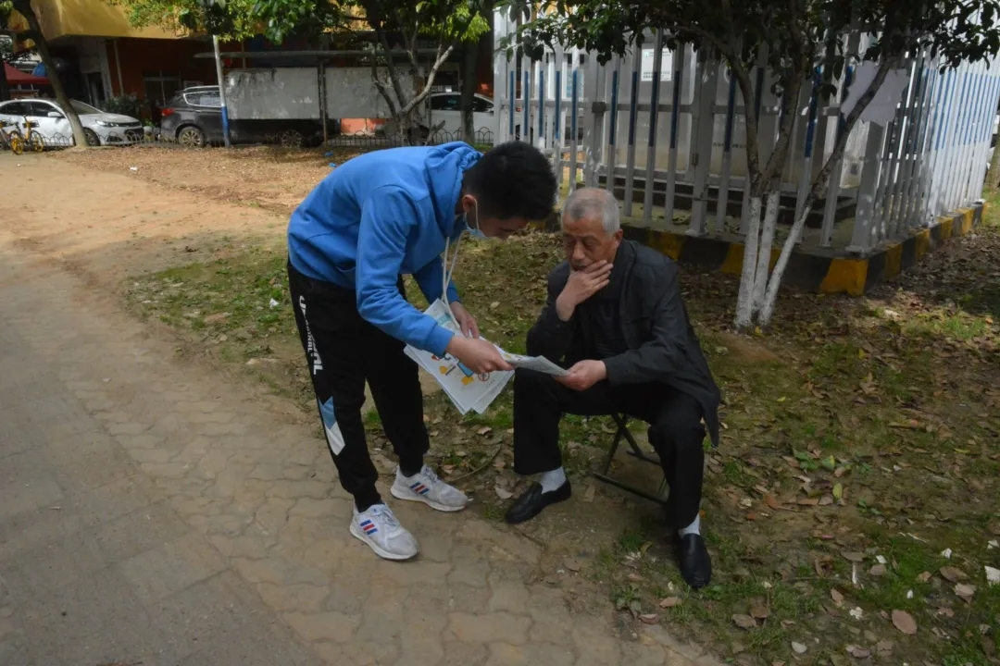

本人乐于助人,因此经常在课余时间报名参加各种志愿活动。 右图是我参加的进社区宣传信息安全的活动。参加完长跑志愿活动后, 我感受到了运动员的那种坚持不懈的精神,即使比赛强度大、环境炎热, 可是他们仍坚持跑完全程,让我感到十分佩服。参加完七彩四点半的志愿活动后, 我再一次感受到了小孩子独有的童真和乐趣,和他们在一起可以让自己也变得快乐。
我参加过许多志愿活动,可是每次参加完志愿活动后总能带给我不一样的感受, 在今后我仍然会继续参加各种各样的志愿活动,这不仅能拓宽我的视野,还能锻炼我的能力, 同时还能收获别样的快乐。

| 活动名称 | 活动时间 | 活动地点 | 活动时长 |
|---|---|---|---|
| "中原杯"阳光长跑比赛志愿服务 | 2021.12.11 | 中原楼 | 4小时 |
| 信息与安全工程学院2021年迎新活动 | 2021.09.05 | 首义校区 | 8小时 |
| "情满旅途，人文客运"地铁志愿服务 | 2021.06.15 | 楚河汉街地铁站 | 3小时 |
| 5月"和谐校园"活动 | 2021.05.22 | 南湖校区 | 2小时 |
| 七彩四点半——社区儿童帮扶计划 | 2021.05.10 | 千家街社区 | 3小时 |